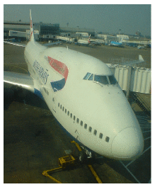
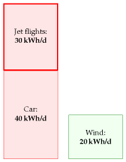
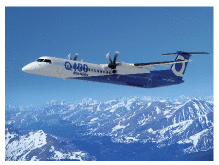
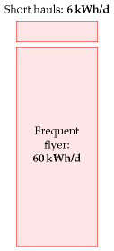

5 Planes

Imagine that you make one intercontinental trip per year by plane. How much energy does that cost?
A Boeing 747-400 1 with 240 000 litres of fuel carries 416 passengers about 8 800 miles (14 200 km). And fuel’s calorific value is 10 kWh per litre. (We learned that in Chapter 3.) So the energy cost of one full-distance roundtrip on such a plane, if divided equally among the passengers, is
\[ \begin{matrix} {\frac{\text{2\ ×\ 240\ 000\ litre}}{\text{416\ passengers}} \times \text{10\ kWh/litre}} \\ {\simeq \text{12\ 000\ kWh\ per\ passenger}} \\ \end{matrix} \]
If you make one such trip per year, then your average energy consumption per day is
\[ \frac{\text{12\ 000\ kWh}}{\text{365\ days}} \simeq \text{33\ kWh/day} \]
14 200 km is a little further than London to Cape Town (10 000 km) and London to Los Angeles (9000km), so I think we’ve slightly overestimated the distance of a typical long-range intercontinental trip; but we’ve also overestimated the fullness of the plane, and the energy cost per person is more if the plane’s not full. Scaling down by 10 000 km/14 200 km to get an estimate for Cape Town, then up again by 100/80 to allow for the plane’s being 80% full, we arrive at 29 kWh per day. For ease of memorization, I’ll round this up to 30 kWh per day.

Figure 5.1. Taking one intercontinental trip per year uses about 30 kWh per day.
Let’s make clear what this means. Flying once per year has an energy cost slightly bigger than leaving a 1 kW electric fire on, non-stop, 24 hours a day, all year.

Figure 5.2. Bombardier Q400 NextGen www.q400.com
Just as Chapter 3, in which we estimated consumption by cars, was accompanied by Chapter A, offering a model of where the energy goes in cars, this chapter’s technical partner (Chapter C), discusses where the energy goes in planes. Chapter C allows us to answer questions such as “would air travel consume significantly less energy if we travelled in slower planes?” The answer is no: in contrast to wheeled vehicles, which can get more efficient the slower they go, planes are already almost as energy-efficient as they could possibly be. Planes unavoidably have to use energy for two reasons: they have to throw air down in order to stay up, and they need energy to overcome air resistance. No redesign of a plane is going to radically improve its efficiency. 2 A 10% improvement? Yes, possible. A doubling of efficiency? I’d eat my complimentary socks.
Queries
| Mode | Energy per distance (kWh per 100 p-km) |
|---|---|
| Car (4 occupants) | 20 |
| Ryanair’s planes, year 2007 | 37 |
| Bombardier Q400, full | 38 |
| 747, full | 42 |
| 747, 80% full | 53 |
| Ryanair’s planes, year 2000 | 73 |
| Car (1 occupant) | 80 |
Table 5.3. Passenger transport efficiencies, expressed as energy required per 100 passenger-km.
What has changed since 2008
A section added in the 2026 revision. Of all the consumption chapters, this is the one whose numbers have moved least, and the reason is the one MacKay gives: a plane is close to a physical limit that no amount of engineering removes. Something must hold an aeroplane up, and holding it up costs energy.
The aircraft did improve, by roughly a fifth. The 747-400 in the calculation above has been replaced on most long routes by the Boeing 787 and Airbus A350, and short-haul by the A320neo and 737 MAX families, each burning around 20–25% less fuel per seat than the aircraft it replaced. Applied to the table above, that moves a full modern long-haul aircraft from about 42 kWh per 100 passenger-km to something nearer 32. It is a genuine improvement, achieved over roughly twenty years, and it does not change the shape of the answer: a full aeroplane is still in the same band as a car with a single occupant is bad, and a car with four is better than either.
The fuel has not changed at all, and this is the difficulty. Aviation is the one large energy use with no electrical route: batteries are roughly forty times worse per kilogram than kerosene, and that ratio is set by chemistry. The industry’s answer is sustainable aviation fuel — chemically near-identical kerosene made from waste oils, and eventually from captured carbon — and both Britain and the EU now mandate it. The UK SAF Mandate came into force on 1 January 2025 requiring 2% of jet fuel to be SAF, rising to 10% by 2030 and 22% by 2040; the EU’s ReFuelEU Aviation requires 2% in 2025, 6% by 2030, 34% by 2040 and 70% by 2050.3
What it costs is the part worth putting in this book’s terms. In 2025, sustainable aviation fuel of the established kind traded at about $2,180 per tonne in northwest Europe, of which $1,431 was the premium over ordinary jet fuel — which puts conventional kerosene near $750 and makes SAF roughly three times the price.4 More telling is that the premium is not falling. The cost of producing it has moved between about $1,900 and $2,700 a tonne since 2021 with no downward trend at all. Solar modules and batteries fell by an order of magnitude over comparable periods; SAF has not begun to.
So the arithmetic of this chapter stands, and the conclusion behind it stands more firmly than when it was written. A single intercontinental trip still costs about 30 kWh per day spread over a year — comparable to driving 50 km a day — and the improvement since 2008 is a fifth, not a factor. Flying remains the hardest item on the consumption stack to decarbonise, and unlike cars, where chapter 3’s forty kilowatt-hours can be cut fivefold by changing what the vehicle burns, there is no equivalent move available here. The honest options remain efficiency at the margin, expensive substitute fuel, and flying less.
Aren’t turboprop aircraft far more energy-efficient?
No. The “comfortably greener” Bombardier Q400 NextGen, “the most technologically advanced turboprop in the world,” according to its manufacturers [www.q400.com], uses 3.81 litres per 100 passenger-km (at a cruise speed of 667 km/h), which is an energy cost of 38 kWh per 100 p-km. The full 747 has an energy cost of 42 kWh per 100 p-km. So both planes are twice as fuel-efficient as a single-occupancy car. (The car I’m assuming here is the average European car that we discussed in Chapter 3.)
Is flying extra-bad for climate change in some way?
Yes, that’s the experts’ view, though uncertainty remains about this topic [3fbufz]. Flying creates other greenhouse gases in addition to CO2, such as water and ozone, and indirect greenhouse gases, such as nitrous oxides. If you want to estimate your carbon footprint in tons of CO2equivalent, then you should take the actual CO2 emissions of your flights and bump them up two- or three-fold. This book’s diagrams don’t include that multiplier because here we are focusing on our energy balance sheet.
The best thing we can do with environmentalists is shoot them.
Michael O’Leary, CEO of Ryanair [3asmgy]
Notes and further reading
(Figure omitted from this edition: third-party rights.)
Figure 5.4. Ryanair Boeing 737-800. Photograph by Adrian Pingstone.
What about short-haul flights? In 2007, Ryanair, “Europe’s greenest airline,” delivered transportation at a cost of 37 kWh per 100 p-km [3exmgv]. This means that flying across Europe with Ryanair has much the same energy cost as having all the passengers drive to their destination in cars, two to a car. (For an indication of what other airlines might be delivering, Ryanair’s fuel burn rate in 2000, before their environment-friendly investments, was above 73 kWh per 100 p-km.) London to Rome is 1430 km; London to Malaga is 1735 km. So a round-trip to Rome with the greenest airline has an energy cost of 1050 kWh, and a round-trip to Malaga costs 1270 kWh. If you pop over to Rome and to Malaga once per year, your average power consumption is 6.3 kWh/d with the greenest airline, and perhaps 12 kWh/d with a less green one.
What about frequent flyers? To get a silver frequent flyer card from an intercontinental airline, it seems one must fly around 25 000 miles per year in economy class. That’s about 60 kWh per day, if we scale up the opening numbers from this chapter and assume planes are 80% full.
Here are some additional figures from the Intergovernmental Panel on Climate Change [yrnmum]: a full 747-400 travelling 10 000 km with low-density seating (262 seats) has an energy consumption of 50 kWh per 100 p-km. In a high-density seating configuration (568 seats) and travelling 4000 km, the same plane has an energy consumption of 22 kWh per 100 p-km. A shorthaul Tupolev-154 travelling 2235 km with 70% of its 164 seats occupied consumes 80 kWh per 100 p-km.

Figure 5.5. Two short-haul trips on the greenest short-haul airline: 6.3 kWh/d. Flying enough to qualify for silver frequent flyer status: 60 kWh/d.
Boeing 747-400 – data are from [9ehws]. Planes today are not completely full. Airlines are proud if their average fullness is 80%. Easyjet planes are 85% full on average. (Source: thelondonpaper Tuesday 16th January, 2007.) An 80%-full 747 uses about 53 kWh per 100 passenger-km.↩︎
No redesign of a plane is going to radically improve its efficiency. Actually, the Advisory Council for Aerospace Research in Europe (ACARE) target is for an overall 50% reduction in fuel burned per passenger-km by 2020 (relative to a 2000 baseline), with 15–20% improvement expected in engine efficiency. As of 2006, Rolls Royce is half way to this engine target [36w5gz]. Dennis Bushnell, chief scientist at NASA’s Langley Research Center, seems to agree with my overall assessment of prospects for efficiency improvements in aviation. The aviation industry is mature. “There is not much left to gain except by the glacial accretion of a per cent here and there over long time periods.” (New Scientist, 24 February 2007, page 33.) The radically reshaped “Silent Aircraft” [silentaircraft.org/sax40], if it were built, is predicted to be 16% more efficient than a conventional-shaped plane (Nickol, 2008). If the ACARE target is reached, it’s presumably going to be thanks mostly to having fuller planes and better air-traffic management.↩︎
The UK SAF Mandate was made law in November 2024 and took effect on 1 January 2025: 2% of jet fuel supplied, rising to 10% by 2030 and 22% by 2040. ReFuelEU Aviation sets 2% in 2025, 6% in 2030, 20% in 2035, 34% in 2040, 42% in 2045 and 70% in 2050.↩︎
Sustainable aviation fuel prices from the Energy Institute’s Statistical Review of World Energy 2026, sourced to S&P Global: SAF (HEFA-SPK) CIF northwest Europe at $2,315.75/tonne in 2024 and $2,180.50 in 2025, with a premium to jet fuel of $1,510 and $1,431 respectively. Cost of production ex-works northwest Europe: $2,159 (2021), $2,673 (2022), $1,914 (2023), $2,081 (2024), $2,019 (2025). The efficiency gains quoted for the 787, A350, A320neo and 737 MAX are manufacturers’ figures against the previous generation and should be treated as such.↩︎